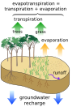

evapotranspiration
process

Source: Wikipedia
Wikipedia Page (Something wrong with this association? Let us know.)
Wikidata Page (Something wrong with this association? Let us know.)
Occurs in:
- land_surface_water_evapotranspiration__mass_flux
- crop_water_evapotranspiration__penman-monteith_reference_volume_flux
- land_surface_vegetation_water_evapotranspiration__mass_flux
- atmosphere_soil_water_evapotranspiration__thornthwaite_potential_volume
- land_region_water_evapotranspiration_precipitation__standardized_drought_intensity_index
- land_surface_water_evapotranspiration__potential_volume_flux